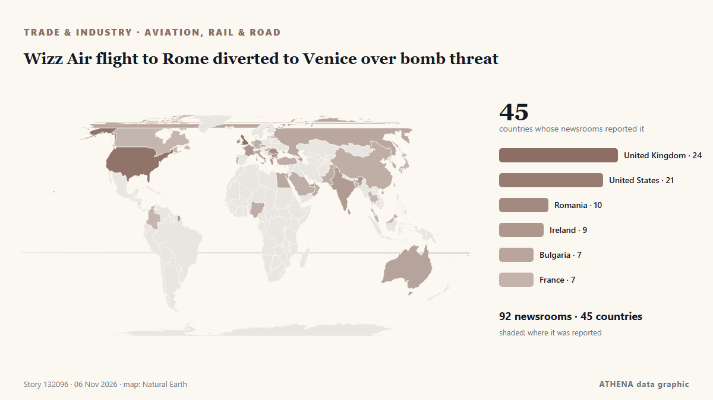

Wizz Air flight to Rome diverted to Venice over bomb threat

Anonymous tip-off about explosives on Ryanair planes from Lisbon and Dublin prompted fighter jet escort; similar false alerts reported across Europe on Tuesday. من Wanted in Rome (working feed)
نشرته بشكل مستقل 92 مصدرًا في 45 دولة منذ 3 نوفمبر، وأول من نشره Romania Insider؛ والتغطية تتراجع. يقدّر ATHENA الخطر بأنه معتدل (3.7/10)، ويعود ذلك أساسًا إلى خطورة الضرر الموصوف ونطاقه الجغرافي والقطاعي. الثقة 90٪ (مرتفعة)، وعدد المصادر المستقلة المؤكِّدة: 92، بمتوسط موثوقية للمصادر يبلغ 72٪. وسائل الإعلام حسب البلد: رومانيا (6), الولايات المتحدة (6), المملكة المتحدة (5). التغطية: من 3 نوفمبر إلى 4 نوفمبر، 33 ساعة.
لماذا يهم: ينتقل الاضطراب في التجارة أو الصناعة أو البنية التحتية عبر سلاسل الإمداد فيغيّر التكاليف ومواعيد التسليم في أماكن بعيدة.
ما الذي تغيّر: 56 تقارير جديدة من 48 غرف أخبار خلال 24 ساعة حتى 6 نوفمبر.
العنوان الأول: Romania’s airline Dan Air loses payment operator after insolvency request
تُعرض العناوين بالإنجليزية كما نُشرت.
نظرة سريعة
اختير وقُيِّم وكُتب وفق منهجية ATHENA المنشورة. لا يتدخل أي محرر في الأحداث بعينها. كيف يُنتَج ›
| 03 Nov 13:12 UTC | 2 |
|---|---|
| 03 Nov 16:12 UTC | 1 |
| 03 Nov 19:12 UTC | 4 |
| 03 Nov 22:12 UTC | 3 |
| 04 Nov 01:12 UTC | 6 |
| 04 Nov 04:12 UTC | 4 |
| 04 Nov 07:12 UTC | 6 |
| 04 Nov 10:12 UTC | 6 |
| 04 Nov 13:12 UTC | 6 |
| 04 Nov 16:12 UTC | 0 |
| 04 Nov 19:12 UTC | 2 |
| 04 Nov 22:12 UTC | 2 |
| 05 Nov 01:12 UTC | 2 |
| 05 Nov 04:12 UTC | 1 |
| 05 Nov 07:12 UTC | 6 |
| 05 Nov 10:12 UTC | 31 |
| 05 Nov 13:12 UTC | 22 |
| 05 Nov 16:12 UTC | 14 |
| 05 Nov 19:12 UTC | 7 |
| 05 Nov 22:12 UTC | 8 |
| 06 Nov 01:12 UTC | 4 |
| 06 Nov 04:12 UTC | 1 |
| 06 Nov 07:12 UTC | 2 |
| 06 Nov 10:12 UTC | 18 |
| 06 Nov 13:12 UTC | 3 |
| 06 Nov 16:12 UTC | 3 |
| 05 Nov 14:06 UTC | 3.0 |
|---|---|
| 06 Nov 00:04 UTC | 4.4 |
| 06 Nov 11:08 UTC | 3.7 |
| 06 Nov 17:26 UTC | 3.7 |
لماذا هذه الأرقام
الأهمية
الخطر
الثقة
التغطية — من نشر الخبر ومتى
العنوان كما نُشر · يفتح الأصل- Romania Insider · رومانياUS Under Secretary of Defense for Policy to meet president Dan in Bucharest on November 4
- Wanted in Rome (working feed) · إيطالياHoax bomb threats hit flights at Rome’s Fiumicino airport
- Business Review (Romania) · رومانياBellemonde opens the first Ready to Move In showroom in northern Bucharest
- Simple Flying · الولايات المتحدةAir Canada Cancels All Flights To This Long-Haul Destination: See Map Now
- Evening Standard (London) · المملكة المتحدةTwo Ryanair flights from Dublin searched after potential bomb threats
- Belfast Telegraph · المملكة المتحدةTwo Ryanair flights from Dublin searched after potential bomb threats
- PBS NewsHour · الولايات المتحدةFlights across Europe face disruption after false bomb threats
- FBC News · فيجيBomb threats on flights, cruise ship cause disruption in Europe, no devices found
- Al Jazeera English · قطرBomb threats disrupt flights across Europe, no explosive devices found
- Punch · نيجيرياSenate debates national carrier, demands equal China flight rights
- The Island · سريلانكاSeven flights across Europe targeted by suspected bomb threats
- Business Recorder · باكستانBomb threats disrupt Europe flights
- Al Jazeera English · قطرSeven flights across Europe targeted by suspected bomb threats
- Nikkei Asia · اليابانTaiwan airlines continue flights over Russia, rattling Europeans
- Trinidad Express · ترينيداد وتوباغوBid to ease airport anxiety
- The National Herald · الولايات المتحدةFlights across Europe Searched and Diverted after Hoax Bomb Threats
- ABC News Australia · أسترالياChina Southern Airlines suspends direct Darwin to China route after one year
- Daily Mirror · سريلانكاSeven flights across Europe targeted by suspected bomb threats
- Gulf News · الإمارات العربية المتحدةEmirates Dubai-US flights: New mandatory attestation form from November 4
- WalesOnline · المملكة المتحدةGovernment update on Ryanair bomb threat that grounded seven flights
- Daily Mirror · سريلانكاThree Indian passengers arrested over unruly behaviour on Sydney-Katunayake flight
- Romania Insider · رومانياRomania’s airline Dan Air loses payment operator after insolvency request
- Birmingham Mail · المملكة المتحدةBirmingham Airport to Delhi flight axed in 'real loss' for Indian community
- Arab Times · الكويتFlights across Europe searched and diverted after hoax bomb threats
- Baltic News Network · لاتفياBomb threats disrupt flights across Europe
- Business Traveller · المملكة المتحدةSWISS Bengaluru Flights Take Off With Nonstop Zurich Link
- Business Review (Romania) · رومانياRomania’s purchasing power is barely half the European average, while Bucharest exceeds it
- Arabian Business · الإمارات العربية المتحدةEmirates imposes new US flight forms effective immediately
- BTA (English) · بلغارياBTA Bucharest Correspondent Martina Gancheva Receives Romanian Association of Journalists and Tourism Writers Award of Excellence
- Romania Insider · رومانياRomania slips one place in European purchasing power ranking, Bucharest scores twice the national average
- Egypt Independent · مصرBomb threats on board 7 flights across Europe cause disruptions
- NDTV · الهندForeign Airlines Back Moving Some Mumbai Flights To Navi Mumbai Airport
- Business Review (Romania) · رومانياPrimark confirms November opening dates for new stores in Bacău and Bucharest
- FreightWaves · الولايات المتحدةEast Midlands Airport welcomes another Chinese cargo airline
- Indian Express · الهندMumbai airport wants all flights to 14 overseas destinations to move to Navi Mumbai, writes to government
- FreightWaves · الولايات المتحدةEmirates rolls out enhanced air cargo service for data center operators
- Simple Flying · الولايات المتحدةHow Much Premium Economy Costs On London-New York Flights In 2026
- Greek City Times · اليونانGreece Sees Stronger Travel Demand and More Flights